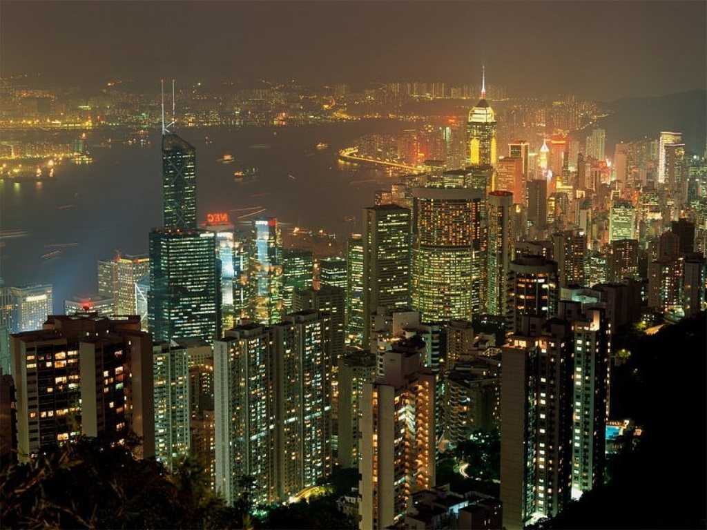
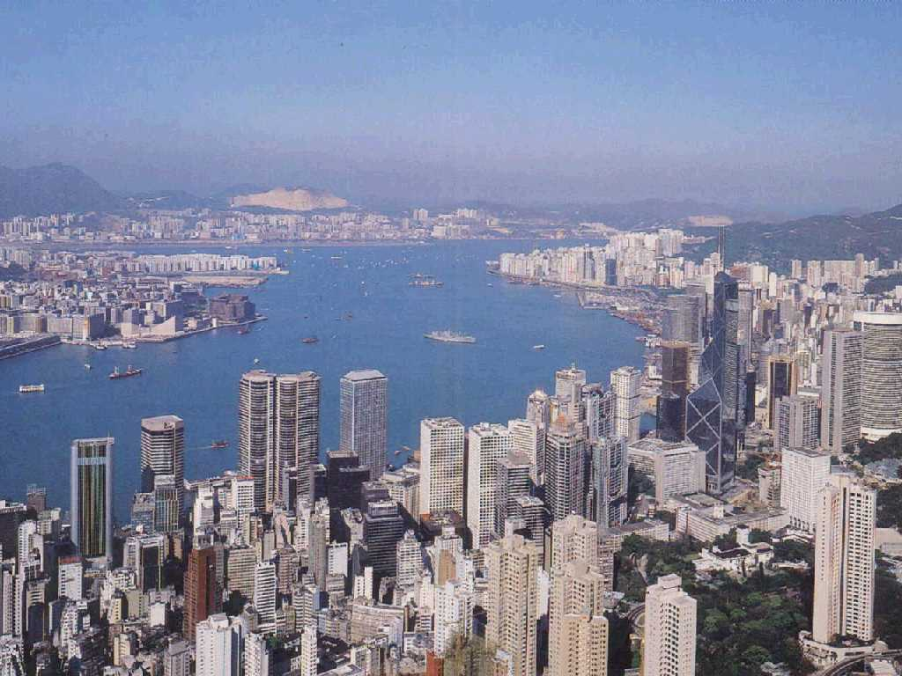
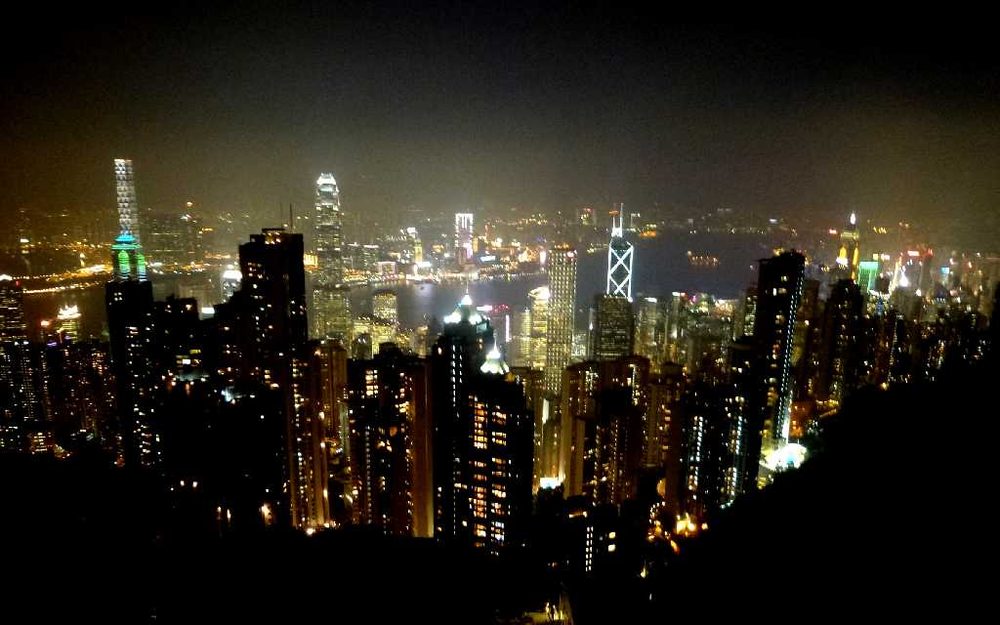
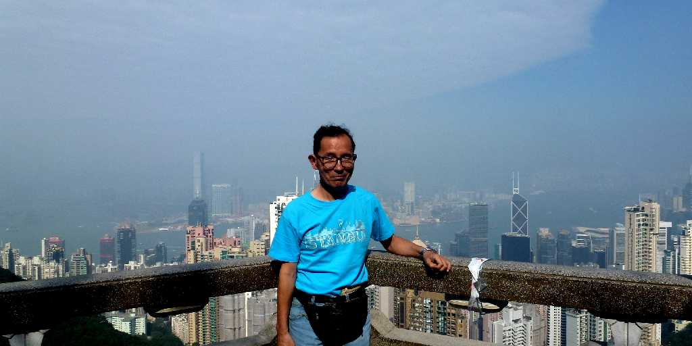
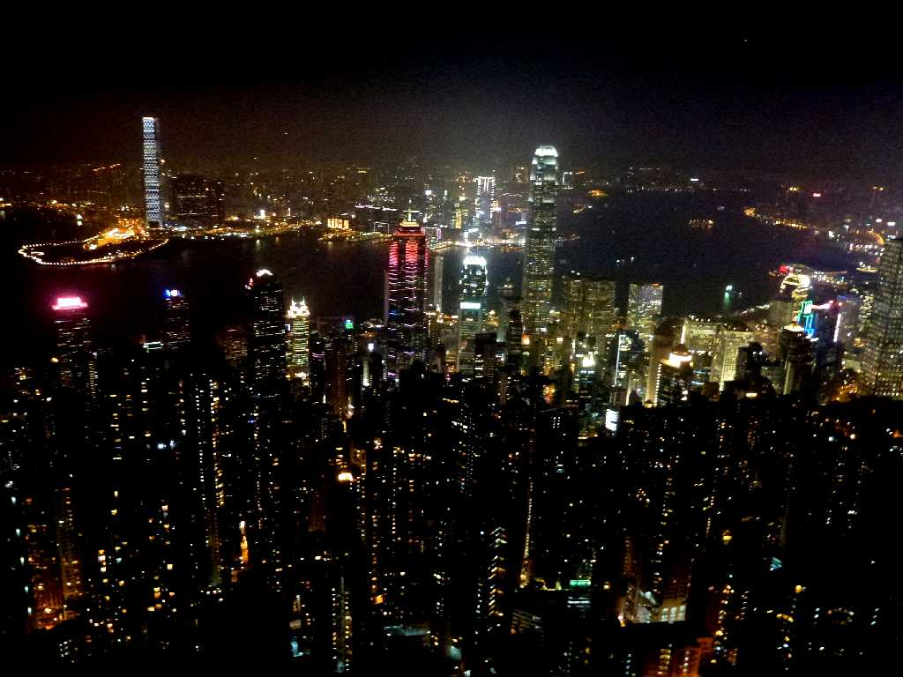
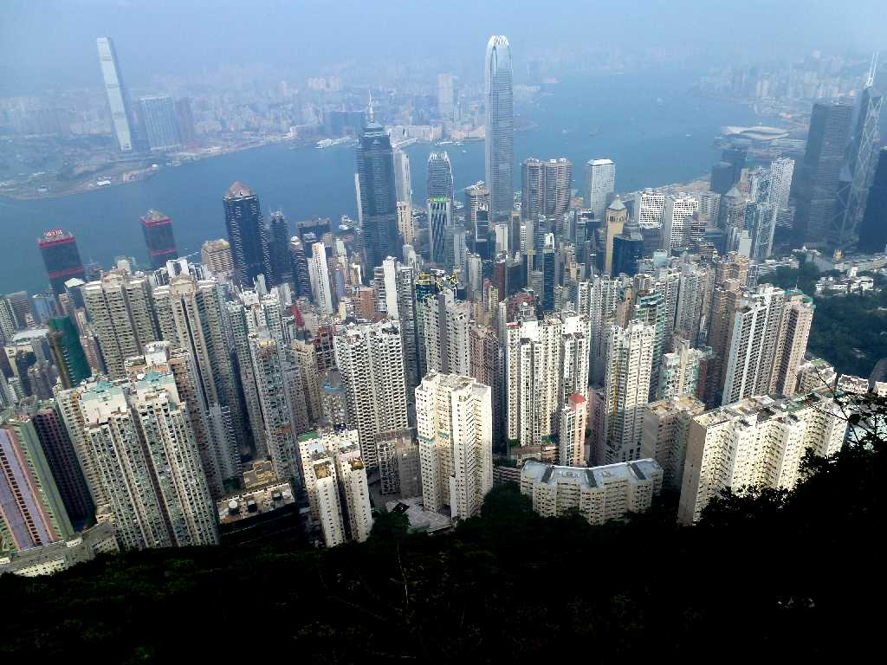

Night View Hong Kong 香港
世界三大夜景で函館山やナポリとは異なりきらびやかな百万ドルの夜景でした Naples Hakodate

View Hong Kong
昼間は世界三大美港でビクトリアピークからの眺めは素晴らしい RioDeJaneiro Sydney

Night View from Lions Pavilion Victoria Peak Hong Kong 香港
約３０年ぶりの香港訪問でビルが多くなり夜景も更にきらびやかに
View from Lions Pavilion Victoria Peak Hong Kong

November 19 2012 Lions Pavilion Victoria Peak

Night View from Lugard Road Victoria Peak
今回は時間が有るので西側のルガルド散策路で夜景をじっくり観賞 獅子亭より視界が２倍位広くさすが世界一の夜景に感激

View from Lugard Road Victoria Peak
午後のルガルド散策路からのパノラマも美しい